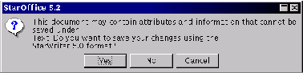

Next: Formatos nativos
Up: StarDesktop: El Entorno de
Previous: La barra de herramientas
Índice General
StarOffice tiene sus propios formatos para almacenar en archivos el
contenido de los documentos. También es capaz de leerlo y almacenarlo
en otros tipos de archivos, pero la recomendación es guardar cada
documento siempre en el formato nativo de StarOffice y posteriormente
en cualquier otro que se desee. El motivo es que si no se hace así se
podrían perder algunas características.
Figura 5.11:
StarOffice advierte de la pérdida de formato
|

|
Subsecciones
Proyecto Cursos - LuCAS - http://lucas.hispalinux.es/htmls/cursos.html